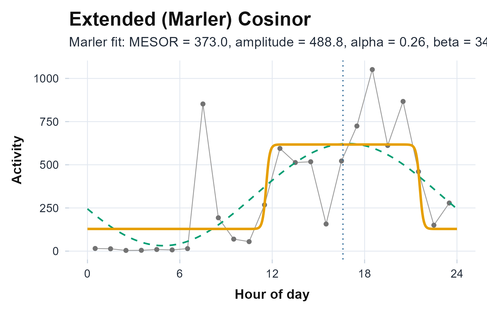

The idea, and a rule to remember
The cosinor fits a cosine of fixed period to the rest-activity rhythm and reads three interpretable numbers off it: the MESOR (the rhythm-adjusted mean), the amplitude (half the peak-to-trough swing), and the acrophase (the clock time of the peak). Where the nonparametric metrics make no shape assumption, the cosinor makes a strong one (a single, symmetric sinusoid) and in return gives you parameters you can model and compare across people.
The rule to carry through this article: a significant rhythmicity test tells you the rhythm is not flat, not that a single cosine is the right shape. Always read the percent-rhythm alongside the p-value; it is how much of the daily structure the one cosine actually captures, and a low value is the data telling you the shape is wrong.
The math
Write the averaged daily activity as at clock time , with period (24 hours by default) and . The cosinor model is
which is fitted in its linear form
so the three parameters come straight from the regression coefficients:
Whether the rhythm is real is the zero-amplitude F-test of (Nelson et al., 1979), and the share of variance the cosine explains is the percent-rhythm, .
Assumptions, and when they break
- One symmetric sinusoid. The model has a single peak and trough of equal, smooth shape. Asymmetric days (a fast morning rise, a slow evening decline), squared-off days, naps, and bimodal patterns all violate it. The section “When a single cosine is the wrong shape” below makes this concrete.
- A fixed, known period. The cosinor assumes ; it does not estimate it. If the rhythm may be free-running, estimate the period first (see Choosing a method).
- The acrophase is only meaningful once the amplitude is. A clock time of the peak is uninterpretable if the amplitude is not distinguishable from zero.
Recovering known truth
First, see the fit recover parameters we plant. We build a seven-day recording from a cosine with a MESOR of 200, an amplitude of 100, and a 16:00 acrophase, then add noise.
ts <- seq(as.POSIXct("2024-01-01", tz = "UTC"), by = 60, length.out = 7 * 1440)
th <- as.numeric(difftime(ts, ts[1], units = "hours"))
set.seed(1)
known <- pmax(0, 200 + 100 * cos(2 * pi * (th - 16) / 24) + rnorm(length(ts), 0, 15))
ca <- cosinor.analysis(known, ts)
knitr::kable(
data.frame(parameter = c("MESOR", "amplitude", "acrophase (h)"),
planted = c(200, 100, 16),
recovered = c(ca$mesor, ca$amplitude, ca$acrophase)),
digits = 2, caption = "The cosinor recovers the planted MESOR, amplitude, and acrophase."
)| parameter | planted | recovered | |
|---|---|---|---|
| MESOR | 200 | 199.90 | |
| cos_term | amplitude | 100 | 99.36 |
| sin_term | acrophase (h) | 16 | 16.01 |
The rhythmicity test confirms the rhythm is real and reports how much of the variance the cosine carries.
rt <- rhythmicity.test(known, ts, cosinor_result = ca)
c(F = rt$F, p_value = rt$p_value, percent_rhythm = rt$percent_rhythm, rhythmic = rt$rhythmic)
#> F p_value percent_rhythm rhythmic
#> 1.049895e+05 1.000000e-42 9.999000e+01 1.000000e+00On a real recording
The bundled recording runs the same way.
cosinor.analysis() returns a typed object;
rhythmicity.test() checks whether the rhythm is
statistically real.
agd <- agd.counts(read.agd(example_agd(1), verbose = FALSE))
cos <- cosinor.analysis(agd$axis1, agd$timestamp, period = 24)
c(mesor = unname(cos$mesor), amplitude = unname(cos$amplitude),
acrophase = unname(cos$acrophase), r_squared = unname(cos$r_squared))
#> mesor amplitude acrophase r_squared
#> 327.2500 295.6300 16.9200 0.4371
rhythmicity.test(agd$axis1, agd$timestamp, cosinor_result = cos)
#> Cosinor Rhythmicity Test (Halberg zero-amplitude F-test)
#>
#> H0: amplitude = 0 (no rhythm)
#> Period: 24 h
#> F(2, 21): 8.15
#> P-value: 0.0024
#> Percent rhythm: 43.7% (R-squared = 0.4371)
#> Rhythmic: YES (alpha = 0.05)
plot_extended_cosinor(agd$axis1, agd$timestamp)
Hourly activity with the fitted 24-hour cosine overlaid. The peak of the curve is the acrophase; its height above the MESOR line is the amplitude. Where the points leave the curve is the structure a single cosine cannot follow.
For the joint uncertainty in amplitude and acrophase together,
cosinor.confidence.ellipse() returns the Bingham et al. (1982) ellipse; an ellipse that
excludes the origin is the geometric form of “a detectable rhythm”.
el <- cosinor.confidence.ellipse(cos)
c(excludes_origin = el$excludes_origin, rhythm_detected = el$rhythm_detected)
#> excludes_origin rhythm_detected
#> TRUE TRUEReading the numbers
- MESOR is the rhythm-adjusted mean, the midline of the fitted cosine rather than the raw average.
- Amplitude is half the peak-to-trough swing; larger is a stronger sinusoidal component.
- Acrophase is the clock time of the peak and is circular: 23.5 and 0.5 are an hour apart, not 23, and it is interpretable only once the amplitude is clearly non-zero.
- Percent-rhythm is the share of variance the cosine explains; a low value next to a small p-value is the warning the rule above flags.
When a single cosine is the wrong shape
This is the rule in action. We build a siesta day (an active morning and evening with a midday dip), which has a clear 24-hour rhythm but is not a single symmetric cosine.
hod <- as.numeric(format(ts, "%H")) + as.numeric(format(ts, "%M")) / 60
set.seed(2)
siesta <- pmax(0, 120 + 70 * cos(2 * pi * (hod - 14) / 24) + # day-night fundamental
55 * cos(2 * pi * 2 * (hod - 14) / 24) + # the midday dip
rnorm(length(ts), 0, 12))
cs <- cosinor.analysis(siesta, ts)
rts <- rhythmicity.test(siesta, ts, cosinor_result = cs)
c(rhythmic = rts$rhythmic, p_value = rts$p_value, percent_rhythm = rts$percent_rhythm)
#> rhythmic p_value percent_rhythm
#> 1.000000e+00 3.743731e-05 6.212000e+01The test is significant (the rhythm is not flat), yet the single cosine explains only about 62 percent of the day. The missing third is the midday dip, which a symmetric cosine cannot represent. A multi-harmonic fit recovers it: it selects two components and explains essentially all of it (the chunk below reports the R-squared).
mc <- cosinor.multicomponent(siesta, ts)
c(n_harmonics = mc$n_harmonics, r_squared = mc$r_squared)
#> n_harmonics r_squared
#> 2.0000000 0.9999345
mc$harmonics
#> harmonic amplitude acrophase_h
#> x2 1 69.67840 14.012182
#> x4 2 54.41006 2.011788So in practice, let the low percent-rhythm, not the significant p-value, send you to a richer model rather than a misleading single acrophase.
The wider cosinor family
-
Asymmetric and squared-off days:
cosinor.extended()andcosinor.antilogistic()fit the sigmoidally transformed cosine of Marler et al. (2006), adding shape parameters (steepness, up- and down-mesor times) the single cosinor lacks.
fit <- cosinor.antilogistic(agd$axis1, agd$timestamp)
c(MESOR = fit$MESOR, amplitude = fit$amplitude, acrophase = fit$acrophase,
UpMesor = fit$UpMesor, DownMesor = fit$DownMesor)
#> MESOR amplitude acrophase UpMesor DownMesor
#> 372.95566 488.79342 16.59496 11.60451 21.58541-
Several harmonics, chosen objectively:
cosinor.multicomponent()adds components and picks how many by AIC or BIC, as in the siesta example above. -
The parametric amplitude as a ratio:
circadian.quotient()turns the cosinor amplitude and MESOR into the circadian quotient (amplitude / MESOR). -
Pooling the evidence:
consensus.rhythmicity()runs the cosinor F-test, the Bingham ellipse, the Lomb-Scargle false-alarm probability, and the chi-square periodogram together, and reports a majority vote with a combined p-value. -
From one subject to a group:
population.cosinor()pools per-subject fits into a Bingham population-mean rhythm with confidence intervals, andcosinor.compare()tests whether the rhythm differs between two groups with an omnibus Hotelling and per-parameter tests (Bingham et al., 1982). See Choosing a method for when to reach for each.
Limitations
- The period is assumed, not estimated. Set it correctly, or estimate it first with the periodograms.
- A single component is symmetric. Real days rarely are; read the percent-rhythm and escalate to the extended or multicomponent fit when it is low.
- The acrophase needs a real amplitude. Report it only when the amplitude is clearly distinguishable from zero (the rhythmicity test and the confidence ellipse are the checks).
Reference and validation
The cosinor follows Cornelissen (2014) with the zero-amplitude
test of Nelson et al. (1979), the anti-logistic extension of
Marler et al. (2006), and the population framework of
Bingham et al. (1982). actiRhythm’s single and
extended cosinor are cross-checked against the cosinor
package and ActCR::ActExtendCosinor (to the printed
precision) in the Validation article and
the package’s test suite.